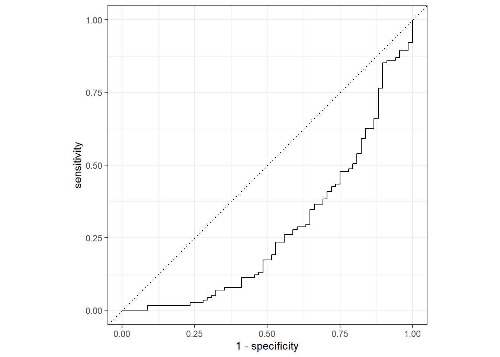
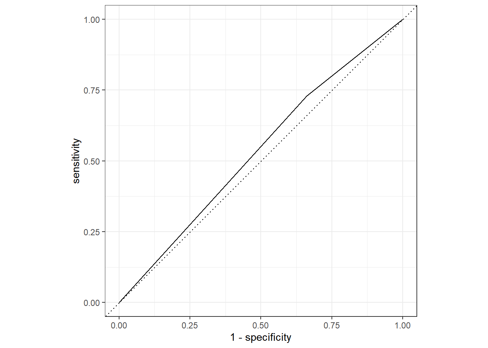

Loading all the default settings and preliminary programs.
Path to Processed Data and loading of cleaned data
data_location <- here::here("data","processed_data","processeddata.rds")
data<- readRDS(data_location)Reminder: Outcome of interest is Body Temp; Categorical outcome is Nausea; Predictor= RunnyNose
Mod9Analysis<-
data
glimpse(Mod9Analysis)## Rows: 730
## Columns: 32
## $ SwollenLymphNodes <fct> Yes, Yes, Yes, Yes, Yes, No, No, No, Yes, No, Yes, Y~
## $ ChestCongestion <fct> No, Yes, Yes, Yes, No, No, No, Yes, Yes, Yes, Yes, Y~
## $ ChillsSweats <fct> No, No, Yes, Yes, Yes, Yes, Yes, Yes, Yes, No, Yes, ~
## $ NasalCongestion <fct> No, Yes, Yes, Yes, No, No, No, Yes, Yes, Yes, Yes, Y~
## $ CoughYN <fct> Yes, Yes, No, Yes, No, Yes, Yes, Yes, Yes, Yes, No, ~
## $ Sneeze <fct> No, No, Yes, Yes, No, Yes, No, Yes, No, No, No, No, ~
## $ Fatigue <fct> Yes, Yes, Yes, Yes, Yes, Yes, Yes, Yes, Yes, Yes, Ye~
## $ SubjectiveFever <fct> Yes, Yes, Yes, Yes, Yes, Yes, Yes, Yes, Yes, No, Yes~
## $ Headache <fct> Yes, Yes, Yes, Yes, Yes, Yes, No, Yes, Yes, Yes, Yes~
## $ Weakness <fct> Mild, Severe, Severe, Severe, Moderate, Moderate, Mi~
## $ WeaknessYN <fct> Yes, Yes, Yes, Yes, Yes, Yes, Yes, Yes, Yes, Yes, Ye~
## $ CoughIntensity <fct> Severe, Severe, Mild, Moderate, None, Moderate, Seve~
## $ CoughYN2 <fct> Yes, Yes, Yes, Yes, No, Yes, Yes, Yes, Yes, Yes, Yes~
## $ Myalgia <fct> Mild, Severe, Severe, Severe, Mild, Moderate, Mild, ~
## $ MyalgiaYN <fct> Yes, Yes, Yes, Yes, Yes, Yes, Yes, Yes, Yes, Yes, Ye~
## $ RunnyNose <fct> No, No, Yes, Yes, No, No, Yes, Yes, Yes, Yes, No, No~
## $ AbPain <fct> No, No, Yes, No, No, No, No, No, No, No, Yes, Yes, N~
## $ ChestPain <fct> No, No, Yes, No, No, Yes, Yes, No, No, No, No, Yes, ~
## $ Diarrhea <fct> No, No, No, No, No, Yes, No, No, No, No, No, No, No,~
## $ EyePn <fct> No, No, No, No, Yes, No, No, No, No, No, Yes, No, Ye~
## $ Insomnia <fct> No, No, Yes, Yes, Yes, No, No, Yes, Yes, Yes, Yes, Y~
## $ ItchyEye <fct> No, No, No, No, No, No, No, No, No, No, No, No, Yes,~
## $ Nausea <fct> No, No, Yes, Yes, Yes, Yes, No, No, Yes, Yes, Yes, Y~
## $ EarPn <fct> No, Yes, No, Yes, No, No, No, No, No, No, No, Yes, Y~
## $ Hearing <fct> No, Yes, No, No, No, No, No, No, No, No, No, No, No,~
## $ Pharyngitis <fct> Yes, Yes, Yes, Yes, Yes, Yes, Yes, No, No, No, Yes, ~
## $ Breathless <fct> No, No, Yes, No, No, Yes, No, No, No, Yes, No, Yes, ~
## $ ToothPn <fct> No, No, Yes, No, No, No, No, No, Yes, No, No, Yes, N~
## $ Vision <fct> No, No, No, No, No, No, No, No, No, No, No, No, No, ~
## $ Vomit <fct> No, No, No, No, No, No, Yes, No, No, No, Yes, Yes, N~
## $ Wheeze <fct> No, No, No, Yes, No, Yes, No, No, No, No, No, Yes, N~
## $ BodyTemp <dbl> 98.3, 100.4, 100.8, 98.8, 100.5, 98.4, 102.5, 98.4, ~summary(Mod9Analysis)## SwollenLymphNodes ChestCongestion ChillsSweats NasalCongestion CoughYN
## No :418 No :323 No :130 No :167 No : 75
## Yes:312 Yes:407 Yes:600 Yes:563 Yes:655
##
##
##
##
## Sneeze Fatigue SubjectiveFever Headache Weakness WeaknessYN
## No :339 No : 64 No :230 No :115 None : 49 No : 49
## Yes:391 Yes:666 Yes:500 Yes:615 Mild :223 Yes:681
## Moderate:338
## Severe :120
##
##
## CoughIntensity CoughYN2 Myalgia MyalgiaYN RunnyNose AbPain
## None : 47 No : 47 None : 79 No : 79 No :211 No :639
## Mild :154 Yes:683 Mild :213 Yes:651 Yes:519 Yes: 91
## Moderate:357 Moderate:325
## Severe :172 Severe :113
##
##
## ChestPain Diarrhea EyePn Insomnia ItchyEye Nausea EarPn
## No :497 No :631 No :617 No :315 No :551 No :475 No :568
## Yes:233 Yes: 99 Yes:113 Yes:415 Yes:179 Yes:255 Yes:162
##
##
##
##
## Hearing Pharyngitis Breathless ToothPn Vision Vomit Wheeze
## No :700 No :119 No :436 No :565 No :711 No :652 No :510
## Yes: 30 Yes:611 Yes:294 Yes:165 Yes: 19 Yes: 78 Yes:220
##
##
##
##
## BodyTemp
## Min. : 97.20
## 1st Qu.: 98.20
## Median : 98.50
## Mean : 98.94
## 3rd Qu.: 99.30
## Max. :103.10View proportions of the samples with Nausea
#making a summary table of proportions
Mod9Analysis%>%
count(Nausea)%>%
mutate(Proportions = n/sum(n)) #sample/sum of sample## Nausea n Proportions
## 1 No 475 0.6506849
## 2 Yes 255 0.3493151~34% of samples had a Nausea from this selection of data. The remaining 66% did not expereince Nausea. Most people had normal temperatures in this selection.
Mod9Analysis%>%
skimr::skim(Nausea, RunnyNose)| Name | Piped data |
| Number of rows | 730 |
| Number of columns | 32 |
| _______________________ | |
| Column type frequency: | |
| factor | 2 |
| ________________________ | |
| Group variables | None |
Variable type: factor
| skim_variable | n_missing | complete_rate | ordered | n_unique | top_counts |
|---|---|---|---|---|---|
| Nausea | 0 | 1 | FALSE | 2 | No: 475, Yes: 255 |
| RunnyNose | 0 | 1 | FALSE | 2 | Yes: 519, No: 211 |
Need to split into
Adapting from the tidymodels example using rsample package to create an object that contains info on how to split and 2 more rsample funtions to create the data frames for training and testing
# Fix the random numbers by setting the seed
# This enables the analysis to be reproducible when random numbers are used
set.seed(222)
# Put 3/4 of the data into the training set; this leaves 1/4 of the data to be used to test
data_split <- initial_split(Mod9Analysis, prop = 3/4)
## Create data frames for the two sets:
train_data <- training(data_split)
test_data <- testing(data_split)roles are optional in this exercise
Use a recipe to create new predictors and conduct pre-processing required by model
Mod9_rec<-
recipe(Nausea~., data = train_data)%>%
step_dummy(all_nominal_predictors()) %>%
# creates dummy variables as a single factor
# the all_nominal_predictors to apply the recipe to several variables at once
step_zv(all_predictors())
#removes columns from data when training set data have a single value
#formula to the left of "~" = model outcome
# predictors are to the right of "~"; can be listed of use "." to indicate ALL OTHER variables are predictors
summary(Mod9_rec) #view variables and their roles## # A tibble: 32 x 4
## variable type role source
## <chr> <chr> <chr> <chr>
## 1 SwollenLymphNodes nominal predictor original
## 2 ChestCongestion nominal predictor original
## 3 ChillsSweats nominal predictor original
## 4 NasalCongestion nominal predictor original
## 5 CoughYN nominal predictor original
## 6 Sneeze nominal predictor original
## 7 Fatigue nominal predictor original
## 8 SubjectiveFever nominal predictor original
## 9 Headache nominal predictor original
## 10 Weakness nominal predictor original
## # ... with 22 more rows#Use logistic regression to model data.
#Build model specification using parsnip
lr_mod<-
logistic_reg()%>%
set_engine("glm")Want to use recipe over several steps as training and testing the model.
To do so use the workflow package from tidymodels
Mod9_wflow<-
workflow()%>%
add_model(lr_mod)%>%
add_recipe(Mod9_rec)
Mod9_wflow## == Workflow ====================================================================
## Preprocessor: Recipe
## Model: logistic_reg()
##
## -- Preprocessor ----------------------------------------------------------------
## 2 Recipe Steps
##
## * step_dummy()
## * step_zv()
##
## -- Model -----------------------------------------------------------------------
## Logistic Regression Model Specification (classification)
##
## Computational engine: glmPrepare recipe and train model from resulting predictors
Mod9_fit<-
Mod9_wflow%>%
fit(data=train_data)Extracting the model or recipe from workflow. Pull fitted model object and see the model coefficients
Mod9_fit%>%
extract_fit_parsnip()%>%
tidy()## # A tibble: 38 x 5
## term estimate std.error statistic p.value
## <chr> <dbl> <dbl> <dbl> <dbl>
## 1 (Intercept) 1.63 9.40 0.173 0.862
## 2 BodyTemp -0.0491 0.0961 -0.511 0.610
## 3 SwollenLymphNodes_Yes -0.241 0.232 -1.04 0.298
## 4 ChestCongestion_Yes 0.219 0.257 0.853 0.394
## 5 ChillsSweats_Yes 0.115 0.332 0.346 0.729
## 6 NasalCongestion_Yes 0.560 0.311 1.80 0.0713
## 7 CoughYN_Yes -0.705 0.611 -1.15 0.249
## 8 Sneeze_Yes 0.117 0.248 0.473 0.636
## 9 Fatigue_Yes 0.177 0.438 0.403 0.687
## 10 SubjectiveFever_Yes 0.229 0.264 0.868 0.385
## # ... with 28 more rowsFitted object completed, apply the object to test data!
predict(Mod9_fit, test_data)## Warning in predict.lm(object, newdata, se.fit, scale = 1, type = if (type == :
## prediction from a rank-deficient fit may be misleading## # A tibble: 183 x 1
## .pred_class
## <fct>
## 1 No
## 2 No
## 3 No
## 4 No
## 5 No
## 6 Yes
## 7 Yes
## 8 No
## 9 No
## 10 Yes
## # ... with 173 more rowsAlternatively
Making augments can
Mod9_aug<-
augment(Mod9_fit, test_data)## Warning in predict.lm(object, newdata, se.fit, scale = 1, type = if (type == :
## prediction from a rank-deficient fit may be misleading
## Warning in predict.lm(object, newdata, se.fit, scale = 1, type = if (type == :
## prediction from a rank-deficient fit may be misleadingMod9_aug## # A tibble: 183 x 35
## SwollenLymphNodes ChestCongestion ChillsSweats NasalCongestion CoughYN Sneeze
## <fct> <fct> <fct> <fct> <fct> <fct>
## 1 Yes No No No Yes No
## 2 Yes Yes Yes Yes Yes Yes
## 3 No No Yes No Yes No
## 4 Yes Yes Yes Yes Yes Yes
## 5 No Yes No No Yes Yes
## 6 No No Yes Yes No No
## 7 No No Yes Yes Yes Yes
## 8 Yes Yes Yes Yes Yes Yes
## 9 No No Yes Yes Yes No
## 10 No No Yes Yes Yes Yes
## # ... with 173 more rows, and 29 more variables: Fatigue <fct>,
## # SubjectiveFever <fct>, Headache <fct>, Weakness <fct>, WeaknessYN <fct>,
## # CoughIntensity <fct>, CoughYN2 <fct>, Myalgia <fct>, MyalgiaYN <fct>,
## # RunnyNose <fct>, AbPain <fct>, ChestPain <fct>, Diarrhea <fct>,
## # EyePn <fct>, Insomnia <fct>, ItchyEye <fct>, Nausea <fct>, EarPn <fct>,
## # Hearing <fct>, Pharyngitis <fct>, Breathless <fct>, ToothPn <fct>,
## # Vision <fct>, Vomit <fct>, Wheeze <fct>, BodyTemp <dbl>, ...Now we have some idea on the predicted values, use ROC and ROC-AUC for fit with data.
Mod9_aug%>%
roc_curve(truth=Nausea, .pred_Yes)%>%
autoplot()
In general, ROC-AUC =0.5 means the model is no good. The results here are opposite of what is typically expected in the graphics and the ROC_AUC is at 0.37. The value is way under the threshold of 0.7 (considered maybe useful) and 0.5 (no good) so it appears that none of the selected symptoms were a great fit model for predicting Nausea.
Mod9_aug%>%
roc_auc(truth=Nausea, .pred_Yes)## # A tibble: 1 x 3
## .metric .estimator .estimate
## <chr> <chr> <dbl>
## 1 roc_auc binary 0.276Re-do the fitting but with a model that only fits the main predictor to the categorical outcome: RunnyNose.
Continue to use the same code as above, but with alternative outcome.
ALTMod9_rec<-
recipe(Nausea~RunnyNose, data = train_data)%>%
step_dummy(all_nominal_predictors()) %>%
# creates dummy variables as a single factor
# the all_nominal_predictors to apply the recipe to several variables at once
step_zv(all_predictors())
#removes columns from data when training set data have a single value
#formula to the left of "~" = model outcome
# predictors are to the right of "~"; can be listed of use "." to indicate ALL OTHER variables are predictors
summary(ALTMod9_rec)## # A tibble: 2 x 4
## variable type role source
## <chr> <chr> <chr> <chr>
## 1 RunnyNose nominal predictor original
## 2 Nausea nominal outcome originalALTMod9_wflow<-
workflow()%>%
add_model(lr_mod)%>%
add_recipe(ALTMod9_rec)
ALTMod9_wflow## == Workflow ====================================================================
## Preprocessor: Recipe
## Model: logistic_reg()
##
## -- Preprocessor ----------------------------------------------------------------
## 2 Recipe Steps
##
## * step_dummy()
## * step_zv()
##
## -- Model -----------------------------------------------------------------------
## Logistic Regression Model Specification (classification)
##
## Computational engine: glmALTMod9_fit<-
ALTMod9_wflow%>%
fit(data=train_data)Extracting the model or recipe from workflow. Pull fitted model object and see the model coefficients
ALTMod9_fit%>%
extract_fit_parsnip()%>%
tidy()## # A tibble: 2 x 5
## term estimate std.error statistic p.value
## <chr> <dbl> <dbl> <dbl> <dbl>
## 1 (Intercept) -0.790 0.172 -4.59 0.00000447
## 2 RunnyNose_Yes 0.188 0.202 0.930 0.352If runny noses predict in nausea
Predict returns predicted class Yes or No
predict(ALTMod9_fit, test_data)## # A tibble: 183 x 1
## .pred_class
## <fct>
## 1 No
## 2 No
## 3 No
## 4 No
## 5 No
## 6 No
## 7 No
## 8 No
## 9 No
## 10 No
## # ... with 173 more rowsUsing augment with the model plus test data to save prediction
ALTMod9_aug<-
augment(ALTMod9_fit, test_data)
ALTMod9_aug## # A tibble: 183 x 35
## SwollenLymphNodes ChestCongestion ChillsSweats NasalCongestion CoughYN Sneeze
## <fct> <fct> <fct> <fct> <fct> <fct>
## 1 Yes No No No Yes No
## 2 Yes Yes Yes Yes Yes Yes
## 3 No No Yes No Yes No
## 4 Yes Yes Yes Yes Yes Yes
## 5 No Yes No No Yes Yes
## 6 No No Yes Yes No No
## 7 No No Yes Yes Yes Yes
## 8 Yes Yes Yes Yes Yes Yes
## 9 No No Yes Yes Yes No
## 10 No No Yes Yes Yes Yes
## # ... with 173 more rows, and 29 more variables: Fatigue <fct>,
## # SubjectiveFever <fct>, Headache <fct>, Weakness <fct>, WeaknessYN <fct>,
## # CoughIntensity <fct>, CoughYN2 <fct>, Myalgia <fct>, MyalgiaYN <fct>,
## # RunnyNose <fct>, AbPain <fct>, ChestPain <fct>, Diarrhea <fct>,
## # EyePn <fct>, Insomnia <fct>, ItchyEye <fct>, Nausea <fct>, EarPn <fct>,
## # Hearing <fct>, Pharyngitis <fct>, Breathless <fct>, ToothPn <fct>,
## # Vision <fct>, Vomit <fct>, Wheeze <fct>, BodyTemp <dbl>, ...Generate and ROC curve. Uses the probability of Nausea being present with a Runny nose
ALTMod9_aug%>%
roc_curve(truth=Nausea, .pred_Yes)%>%
autoplot()
ALTMod9_aug%>%
roc_auc(truth=Nausea, .pred_Yes)## # A tibble: 1 x 3
## .metric .estimator .estimate
## <chr> <chr> <dbl>
## 1 roc_auc binary 0.534Curve produced here and ROC_AUC results show it is not a great predictor, the value is more than 0.5, but so close it probably isn’t a great model to use, thus not a good fit.
Please see lines 19 and 27 for the start of code chunks with relevant initial data -MYC
Below I am creating the new full model recipe for body temperature, making a path to the linear modeling, and combining them into a workflow to create a fitted object.
#Creating recipe for full model
bodytemp_rec = recipe(BodyTemp ~ ., data= Mod9Analysis)
#Creating the linear model type
lm_mod <- linear_reg() %>% set_engine("lm")
#Creating a workflow that adds the model type and the recipe I previously made
bodytemp_wrkflow <- workflow() %>% add_model(lm_mod) %>% add_recipe(bodytemp_rec)
#Creating a fit object
bodytemp_fit <- bodytemp_wrkflow %>% fit(data = train_data)
#Looking at the details of this fitted model (for train and test)
bodytemp_fit %>% extract_fit_parsnip() %>% tidy()## # A tibble: 38 x 5
## term estimate std.error statistic p.value
## <chr> <dbl> <dbl> <dbl> <dbl>
## 1 (Intercept) 97.7 0.345 284. 0
## 2 SwollenLymphNodesYes -0.191 0.108 -1.77 0.0779
## 3 ChestCongestionYes 0.128 0.116 1.10 0.272
## 4 ChillsSweatsYes 0.196 0.148 1.32 0.188
## 5 NasalCongestionYes -0.163 0.137 -1.19 0.233
## 6 CoughYNYes 0.380 0.289 1.31 0.189
## 7 SneezeYes -0.471 0.114 -4.13 0.0000425
## 8 FatigueYes 0.354 0.187 1.89 0.0592
## 9 SubjectiveFeverYes 0.558 0.119 4.70 0.00000338
## 10 HeadacheYes 0.0838 0.151 0.554 0.580
## # ... with 28 more rowsWe can see by the tidy table that there are definitely some significant factors within the full prediction list.
Next we will create our augments for both the test and training data. These augments will be used to find out what the RMSE is.
#Making an augment for both train and test data
bodytemp_aug_test = augment(bodytemp_fit, test_data)## Warning in predict.lm(object = object$fit, newdata = new_data, type =
## "response"): prediction from a rank-deficient fit may be misleadingbodytemp_aug_train = augment(bodytemp_fit, train_data)## Warning in predict.lm(object = object$fit, newdata = new_data, type =
## "response"): prediction from a rank-deficient fit may be misleading#Finding the RMSE for each model
bodytemp_aug_test %>% rmse(BodyTemp, .pred)## # A tibble: 1 x 3
## .metric .estimator .estimate
## <chr> <chr> <dbl>
## 1 rmse standard 1.15bodytemp_aug_train %>% rmse(BodyTemp, .pred)## # A tibble: 1 x 3
## .metric .estimator .estimate
## <chr> <chr> <dbl>
## 1 rmse standard 1.11We get a RMSE of 1.15 (test data) and 1.11 (train data) from predicting body temperature by all predictors.
Below we go through the same process as above but with runny nose as the only predictor.
#Creating recipe for full model
bodytemp_rec2 = recipe(BodyTemp ~ RunnyNose, data= Mod9Analysis)
#Creating a workflow that adds the model type and the recipe I previously made
bodytemp_wrkflow2 <- workflow() %>% add_model(lm_mod) %>% add_recipe(bodytemp_rec2)
#Creating a fit object
bodytemp_fit2 <- bodytemp_wrkflow2 %>% fit(data = train_data)
#Looking at the details of this fitted model
bodytemp_fit2 %>% extract_fit_parsnip() %>% tidy()## # A tibble: 2 x 5
## term estimate std.error statistic p.value
## <chr> <dbl> <dbl> <dbl> <dbl>
## 1 (Intercept) 99.1 0.0964 1028. 0
## 2 RunnyNoseYes -0.261 0.114 -2.29 0.0225Looking at the tidy table, we can see the runny nose is a significant predictor for body temperature.
#Making an augment for both train and test data
bodytemp_aug_test2 = augment(bodytemp_fit2, test_data)
bodytemp_aug_train2 = augment(bodytemp_fit2, train_data)
#Finding the RMSE for each model
bodytemp_aug_test2 %>% rmse(BodyTemp, .pred)## # A tibble: 1 x 3
## .metric .estimator .estimate
## <chr> <chr> <dbl>
## 1 rmse standard 1.13bodytemp_aug_train2 %>% rmse(BodyTemp, .pred)## # A tibble: 1 x 3
## .metric .estimator .estimate
## <chr> <chr> <dbl>
## 1 rmse standard 1.21After creating the augments for each train and testing data sets for the model of runny nose only being the predictor, we get a RMSE of 1.13 (Test data) and 1.21 (Train data). By comparing these values to the full models, the RMSE are around the same value. It is hard to say which is better. If we only look at the test data, they are fairly the same but there is a higher RMSE for the train data with only runny nose as the predictor. However I would say overall, the complete model is probably better because the RMSE’s for the training and test are similar and on average lower than the simple model.